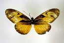
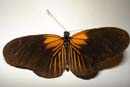
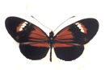
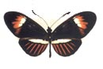
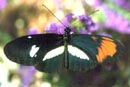
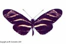
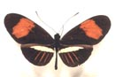

|  |
An odd-looking Eueides
("New Granada, Hewitson coll., Eueides edias" -- NHM,
London) |
|  |
Neruda aoede - forewing-bandless
mutant (Yurimaguas, Peru, Dec 2005, Mathieu Joron) |
|  |
Heliconius melpomene,
crossover within DR gene (Tarapoto Peru, 1986, J.
Mallet [1989] Proc. Roy. Soc. 236:163-185, Plate 2 Fig. 4) |
|  |
Heliconius erato, crossover
within DR gene (Tarapoto Peru, 1986, J.
Mallet [1989] Proc. Roy. Soc. 236:163-185, Plate 2 Fig. 4) |
|  |
Heliconius cydno x
H. melpomene interspecific hybrid, gynandromorph, artificially
reared (Austin, Tx., 2001, L.E. Gilbert) |
|  |
Heliconius charithonia bassleri
aberration (Colombia, Luis Miguel Constantino) |
 |
Heliconius erato homeotic (Sirena,
Corcovado, Costa Rica 1981, J. Mallet).
The right hindwing upperside is normal, but the overall shape of the hindwing,
as well as the venation, is distorted by the partial homeosis on the underside.
I was involved in a mark-release-recapture study, and had marked the left
side in the field with the number 818, turned the butterfly over, and realized
that the right side was homeotic. In retrospect, I should have bred
from this beast to try to get a homeotic mutant, though it was almost certainly
purely somatic. |
|  |
Heliconius erato, crossover
within DRy gene (Tarapoto Peru, 1986, J.
Mallet [1989] Proc. Roy. Soc. 236:163-185, Plate 2 Fig. 4) |
{kind=link}
{kind=link}